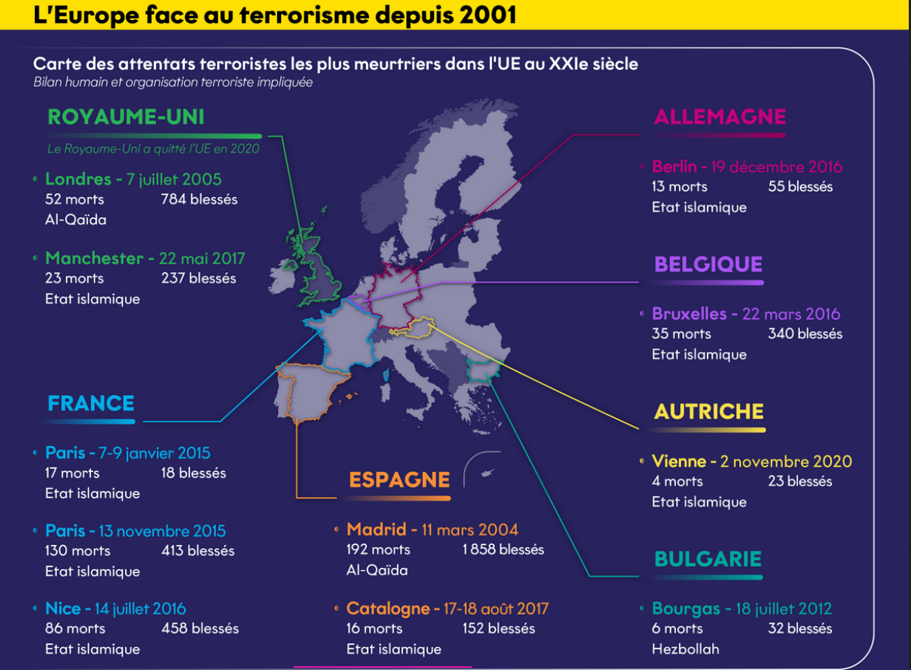
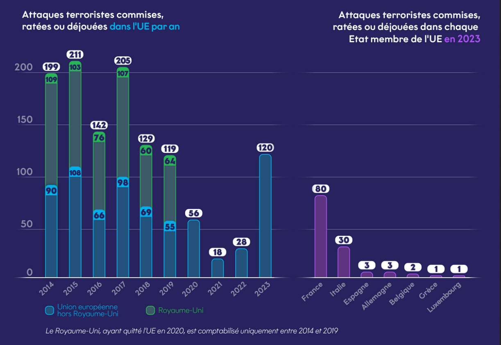

Le terrorisme constitue une menace permanente pour l'Union européenne (UE)




Définition :
L’ONU rescence plus de 140 acceptations du terme de terrorisme. L’Union européenne dispose d’une définition commune qui permet une même base légale pour coordonner les moyens d’action et d’harmoniser les peines. Pour l’UE la notion d’infraction terroriste repose sur une combinaison : d’éléments objectifs... : homicide, préjudices corporels, prise d’otage, chantage, attentats, menaces, etc. ...et d’éléments subjectifs : actes commis dans le but de gravement intimider une population, de déstabiliser ou de détruire des structures d’un pays ou d’une organisation internationale, d’empêcher un gouvernement d’agir.
Définition historique :
“Le terrorisme émerge dans l’Europe du XIXe siècle[...] [puis] importé en Russie, il y est théorisé par les nihilistes. Le mot terrorisme trouve alors son acception contemporaine : une violence émanant de groupes minoritaires, et visant, à travers un individu considéré comme représentatif, le bouleversement d’un ordre politique et social.” Gilles Ferragu
Comment l’Union Européenne tente-t-elle de lutter contre le terrorisme ?